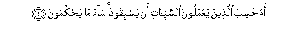
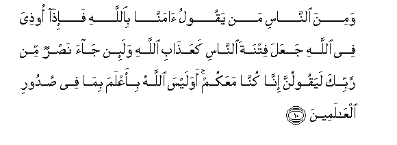
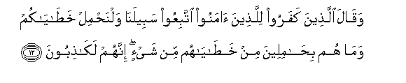

Sacred Texts Islam Index
Hypertext Qur'an Unicode Palmer Pickthall Yusuf Ali English Rodwell
Sūra XXIX.: ‘Ankabūt, or the Spider Index
Previous Next

The Holy Quran, tr. by Yusuf Ali, [1934], at sacred-texts.com
Sūra XXIX.: ‘Ankabūt, or the Spider
Section 1
1. A. L. M.
2. Ahasiba alnnasu an yutrakoo an yaqooloo amanna wahum la yuftanoona
2. Do men think that
They will he left alone
On saying, "We believe",
And that they will not
Be tested?
3. Walaqad fatanna allatheena min qablihim falayaAAlamanna Allahu allatheena sadaqoo walayaAAlamanna alkathibeena
3. We did test those
Before them, and God will
Certainly know those who are
True from those who are false.

4. Am hasiba allatheena yaAAmaloona alssayyi-ati an yasbiqoona saa ma yahkumoona
4. Do those who practise
Evil think that they
Will get the better of us?
Evil is their judgment!
5. Man kana yarjoo liqaa Allahi fa-inna ajala Allahi laatin wahuwa alssameeAAu alAAaleemu
5. For those whose hopes are
in the meeting with God
(In the Hereafter, let them strive);
For the Term (appointed)
By God is surely coming:
And He hears and knows
(All things).
6. Waman jahada fa-innama yujahidu linafsihi inna Allaha laghaniyyun AAani alAAalameena
6. And if any strive (with might
And main), they do so
For their own souls:
For God is free of all
Needs from all creation.
7. Waallatheena amanoo waAAamiloo alssalihati lanukaffiranna AAanhum sayyi-atihim walanajziyannahum ahsana allathee kanoo yaAAmaloona
7. Whose who believe and work
Righteous deeds,—from them
Shall We blot out all evil
(That may be) in them,
And We shall reward
Them according to
The best of their deeds.
8. Wawassayna al-insana biwalidayhi husnan wa-in jahadaka litushrika bee ma laysa laka bihi AAilmun fala tutiAAhuma ilayya marjiAAukum faonabbi-okum bima kuntum taAAmaloona
8. We have enjoined on man
Kindness to parents: but if
They (either of them) strive
(To force) thee to join
With Me (in worship)
Anything of which thou hast
No knowledge, obey them not.
Ye have (all) to return
To Me, and I will
Tell you (the truth)
Of all that ye did.
9. Waallatheena amanoo waAAamiloo alssalihati lanudkhilannahum fee alssaliheena
9. And those who believe
And work righteous deeds,—
Them shall We admit
To the company of the Righteous.

10. Wamina alnnasi man yaqoolu amanna biAllahi fa-itha oothiya fee Allahi jaAAala fitnata alnnasi kaAAathabi Allahi wala-in jaa nasrun min rabbika layaqoolunna inna kunna maAAakum awa laysa Allahu bi-aAAlama bima fee sudoori alAAalameena
10. Then there are among men
Such as say, "We believe
In God"; but when they suffer
Affliction in (the cause of) God,
They treat men's oppression
As if it were the Wrath
Of God! And if help
Comes (to thee) from thy Lord,
They are sure to say,'
"We have (always) been
With you!" Does not God
Know best all that is
In the hearts of all Creation?
11. WalayaAAlamanna Allahu allatheena amanoo walayaAAlamanna almunafiqeena
11. And God most certainly knows
Those who believe, and as certainly
Those who are Hypocrites.

12. Waqala allatheena kafaroo lillatheena amanoo ittabiAAoo sabeelana walnahmil khatayakum wama hum bihamileena min khatayahum min shay-in innahum lakathiboona
12. And the Unbelievers say
To those who believe:
"Follow our path, and we
Will bear (the consequences)"
Of your faults." Never
In the least will they
Bear their faults: in fact
They are liars!
13. Walayahmilunna athqalahum waathqalan maAAa athqalihim walayus-alunna yawma alqiyamati AAamma kanoo yaftaroona
13. They will bear their own
Burdens, and (other) burdens
Along with their own,
And on the Day of Judgment.
They will be called to account
For their falsehoods.